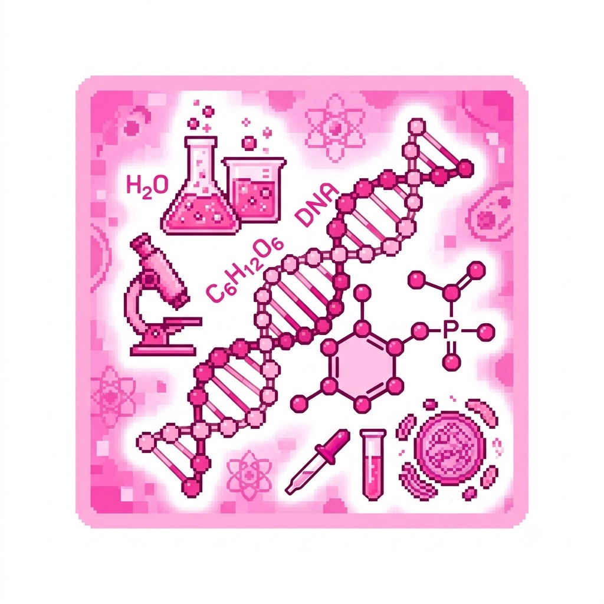

Meu primeiro post
Por: Ana Eloisa
Boas-vindas ao meu novo blog! Aqui vou compartilhar informações e curiosidades sobre a biologia e quimica.
Oque são?
Por: Ana Eloisa
Biologia é a ciência que estuda a vida e os organismos vivos, abrangendo suas estruturas, funções, crescimento, evolução e interações com o meio ambiente. Ela investiga desde microorganismos invisíveis a olho nu, como bactérias e vírus, até grandes ecossistemas e seres complexos, como plantas e animais. Química é a ciência que estuda a matéria, suas propriedades, composição, estrutura e as transformações que ela sofre durante as reações químicas. Ela analisa como os átomos e as moléculas se combinam para formar tudo o que existe no universo, desde a água que bebemos até os materiais sintéticos e medicamentos.